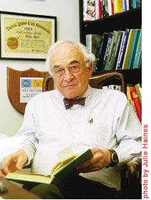

Philip Meyer

This site is being remodeled at pmeyer.web.unc.edu
Professor Emeritus
School of Journalism and Mass Communication
University of North Carolina at Chapel Hill
919 906-3425
pmeyer(at)email(dot)unc(dot)edu
Courses Research Publications Full CV Web sites
Courses
Fall 2007
Spring 2008
Research Interests
- The Quality Project
- Precision Journalism
- Public/Civic Journalism
- Polling
- Communication technology
- Newspapers
- Ethics
- Full CV in outline form
CARSTAT: Computer assisted reporting
Publications
- The Vanishing Newspaper: Saving Journalism in the Information Age, 2004
- Precision Journalism, Fourth Edition
- Ethical Journalism: a Guide for Students, Practitioners and Consumers, 1987
- And others...
Criticism
- Laying the Newspaper Gently Down to Die
- Philip Meyer should have stopped when he was ahead
- Wake up, Prof. Philip Meyer -- You're Dreaming
- Philip Meyer and the Emperor's New Clothes
- Invisible Ink
Personal Interests
Articles and interviews available online
- The Future of Journalism, Sydney Australia (video 2008)
- Saving Journalism (2004)
- Opinion Without Polls: Finding a Link Between Corporate Culture and Public Journalism, (with David Loomis), International Journal of Public Opinion Research, 2000.
- Tuttle Creek Dam: A Case Study in Local Opposition (M.A. thesis, 1962)
- Making a Difference: Covering Campaign '96, a report on the Poynter Election Project, by Philip Meyer and Deborah Potter
- Public Journalism and the Problem of Objectivity, based on a talk given to the IRE conference on computer assisted reporting in Cleveland in September 1995.
- Why Journalism Needs Ph.D.s (1996)
- Learning to Love Lower Profits (1995)
- The Future of CAR (1999)
- If Hitler Asked You to Electrocute a Stranger, Would You? Probably (1970)
Other Web sites of interest
At the University of North Carolina at Chapel Hill... And elsewhere...
| Top | Courses | Research | Publications | Web sites |